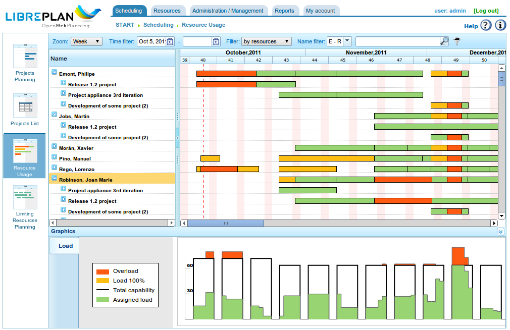

Wprowadzenie
Contents
Ten dokument opisuje funkcje LibrePlan i dostarcza informacji dla użytkowników dotyczących konfiguracji i użytkowania aplikacji.
LibrePlan to aplikacja internetowa o otwartym kodzie źródłowym do planowania projektów. Jej głównym celem jest zapewnienie kompleksowego rozwiązania do zarządzania projektami w firmie. W celu uzyskania szczegółowych informacji o tym oprogramowaniu prosimy o kontakt z zespołem deweloperskim pod adresem http://www.libreplan.com/contact/

Przegląd firmy
Przegląd Firmy i Zarządzanie Widokami
Jak pokazano na głównym ekranie programu (patrz poprzedni zrzut ekranu) i przeglądzie firmy, użytkownicy mogą przeglądać listę zaplanowanych projektów. Umożliwia to zrozumienie ogólnego statusu firmy w zakresie projektów i wykorzystania zasobów. Przegląd firmy oferuje trzy różne widoki:
Widok planowania: Ten widok łączy dwie perspektywy:
- Śledzenie projektów i czasu: Każdy projekt jest reprezentowany przez wykres Gantta, wskazujący daty rozpoczęcia i zakończenia projektu. Informacje te są wyświetlane obok uzgodnionego terminu. Następnie dokonywane jest porównanie między osiągniętym procentem postępu a rzeczywistym czasem poświęconym każdemu projektowi. Zapewnia to jasny obraz wydajności firmy w dowolnym momencie. Ten widok jest domyślną stroną startową programu.
- Wykres wykorzystania zasobów firmy: Ten wykres wyświetla informacje o alokacji zasobów w projektach, zapewniając podsumowanie wykorzystania zasobów całej firmy. Zielony kolor wskazuje, że alokacja zasobów jest poniżej 100% pojemności. Czarna linia reprezentuje całkowitą dostępną pojemność zasobów. Żółty wskazuje, że alokacja zasobów przekracza 100%. Możliwe jest ogólne niedoobciążenie przy jednoczesnym przeciążeniu dla określonych zasobów.
Widok obciążenia zasobów: Ten ekran wyświetla listę pracowników firmy i ich przypisania do konkretnych zadań lub przypisania generyczne oparte na zdefiniowanych kryteriach. Aby uzyskać dostęp do tego widoku, kliknij Całkowite obciążenie zasobów. Patrz poniższy obraz jako przykład.
Widok administracji projektami: Ten ekran wyświetla listę projektów firmy, umożliwiając użytkownikom wykonywanie następujących działań: filtrowanie, edytowanie, usuwanie, wizualizację planowania lub tworzenie nowego projektu. Aby uzyskać dostęp do tego widoku, kliknij Lista projektów.

Przegląd zasobów

Struktura podziału pracy
Zarządzanie widokami opisane powyżej dla przeglądu firmy jest bardzo podobne do zarządzania dostępnego dla pojedynczego projektu. Do projektu można uzyskać dostęp na kilka sposobów:
- Kliknij prawym przyciskiem myszy na wykresie Gantta dla projektu i wybierz Planuj.
- Wejdź na listę projektów i kliknij ikonę wykresu Gantta.
- Utwórz nowy projekt i zmień bieżący widok projektu.
Program oferuje następujące widoki dla projektu:
- Widok planowania: Ten widok umożliwia użytkownikom wizualizację planowania zadań, zależności, kamieni milowych i nie tylko. Patrz sekcja Planowanie w celu uzyskania szczegółowych informacji.
- Widok obciążenia zasobów: Ten widok umożliwia użytkownikom sprawdzenie wyznaczonego obciążenia zasobów dla projektu. Kod kolorów jest spójny z przeglądem firmy: zielony dla obciążenia poniżej 100%, żółty dla obciążenia równego 100% i czerwony dla obciążenia powyżej 100%. Obciążenie może pochodzić z konkretnego zadania lub zestawu kryteriów (przypisanie generyczne).
- Widok edycji projektu: Ten widok umożliwia użytkownikom modyfikowanie szczegółów projektu. Patrz sekcja Projekty w celu uzyskania dodatkowych informacji.
- Widok zaawansowanej alokacji zasobów: Ten widok umożliwia użytkownikom przydzielanie zasobów z zaawansowanymi opcjami, takimi jak określenie godzin dziennie lub przypisanych funkcji do wykonania. Patrz sekcja Alokacja zasobów w celu uzyskania dodatkowych informacji.
Co Sprawia, że LibrePlan Jest Przydatny?
LibrePlan to narzędzie do planowania ogólnego przeznaczenia opracowane w celu rozwiązania problemów z planowaniem projektów przemysłowych, które nie były odpowiednio pokryte przez istniejące narzędzia. Rozwój LibrePlan był również motywowany chęcią zapewnienia bezpłatnej, open-source i w pełni internetowej alternatywy dla własnościowych narzędzi do planowania.
Podstawowe koncepcje leżące u podstaw programu są następujące:
- Przegląd firmy i wielu projektów: LibrePlan jest specjalnie zaprojektowany, aby zapewnić użytkownikom informacje o wielu projektach realizowanych w firmie. Dlatego jest to z natury program wieloprojektowy. Fokus programu nie ogranicza się do poszczególnych projektów, choć dostępne są również widoki specyficzne dla poszczególnych projektów.
- Zarządzanie widokami: Przegląd firmy lub widok wieloprojektowy towarzyszy różnym widokom przechowywanych informacji. Na przykład przegląd firmy umożliwia użytkownikom przeglądanie projektów i porównywanie ich statusu, przeglądanie ogólnego obciążenia zasobów firmy oraz zarządzanie projektami. Użytkownicy mogą również uzyskać dostęp do widoku planowania, widoku obciążenia zasobów, widoku zaawansowanej alokacji zasobów i widoku edycji projektów dla poszczególnych projektów.
- Kryteria: Kryteria to jednostka systemowa, która umożliwia klasyfikację zarówno zasobów (ludzkich i maszynowych), jak i zadań. Zasoby muszą spełniać określone kryteria, a zadania wymagają spełnienia konkretnych kryteriów. Jest to jedna z najważniejszych funkcji programu, ponieważ kryteria stanowią podstawę przypisania generycznego i rozwiązują znaczące wyzwanie w branży: czasochłonny charakter zarządzania zasobami ludzkimi i trudność długoterminowego szacowania obciążeń firmy.
- Zasoby: Istnieją dwa rodzaje zasobów: ludzkie i maszynowe. Zasoby ludzkie to pracownicy firmy, używani do planowania, monitorowania i kontrolowania obciążenia pracy firmy. Zasoby maszynowe, zależne od osób, które je obsługują, działają podobnie jak zasoby ludzkie.
- Alokacja zasobów: Kluczową cechą programu jest możliwość przydzielania zasobów na dwa sposoby: konkretnie i generycznie. Przypisanie generyczne opiera się na kryteriach wymaganych do ukończenia zadania i musi być spełnione przez zasoby zdolne do spełnienia tych kryteriów. Aby zrozumieć przypisanie generyczne, rozważ ten przykład: Jan Kowalski jest spawaczem. Zazwyczaj Jan Kowalski byłby konkretnie przypisany do zaplanowanego zadania. Jednak LibrePlan oferuje opcję wyboru dowolnego spawacza w firmie, bez konieczności określania, że Jan Kowalski jest przypisaną osobą.
- Kontrola obciążenia firmy: Program umożliwia łatwą kontrolę obciążenia zasobów firmy. Ta kontrola rozciąga się zarówno na okres średnio- i długoterminowy, ponieważ bieżące i przyszłe projekty mogą być zarządzane w programie. LibrePlan dostarcza wykresy, które wizualnie reprezentują wykorzystanie zasobów.
- Etykiety: Etykiety służą do kategoryzowania zadań projektowych. Dzięki tym etykietom użytkownicy mogą grupować zadania według koncepcji, umożliwiając późniejszy przegląd jako grupy lub po filtrowaniu.
- Filtry: Ponieważ system naturalnie zawiera elementy etykietujące lub charakteryzujące zadania i zasoby, można stosować filtry kryteriów lub etykiet. Jest to bardzo przydatne do przeglądania skategoryzowanych informacji lub generowania konkretnych raportów opartych na kryteriach lub etykietach.
- Kalendarze: Kalendarze definiują dostępne godziny produkcyjne dla różnych zasobów. Użytkownicy mogą tworzyć ogólne kalendarze firmowe lub definiować bardziej szczegółowe kalendarze, umożliwiając tworzenie kalendarzy dla poszczególnych zasobów i zadań.
- Projekty i elementy projektów: Praca zlecona przez klientów jest traktowana w aplikacji jako projekt, zorganizowany w elementy projektów. Projekt i jego elementy podlegają hierarchicznej strukturze z x poziomami. To drzewo elementów stanowi podstawę do planowania pracy.
- Postęp: Program może zarządzać różnymi rodzajami postępu. Postęp projektu może być mierzony jako procent, w jednostkach, względem uzgodnionego budżetu i nie tylko. Odpowiedzialność za określenie, który rodzaj postępu ma być używany do porównania na wyższych poziomach projektu, spoczywa na kierowniku ds. planowania.
- Zadania: Zadania są podstawowymi elementami planowania w programie. Służą do planowania prac do wykonania. Kluczowe cechy zadań obejmują: zależności między zadaniami i potencjalny wymóg spełnienia określonych kryteriów przed przypisaniem zasobów.
- Raporty pracy: Te raporty, składane przez pracowników firmy, zawierają szczegółowe informacje o przepracowanych godzinach i zadaniach związanych z tymi godzinami. Informacje te umożliwiają systemowi obliczenie rzeczywistego czasu potrzebnego do ukończenia zadania w porównaniu z zabudżetowanym czasem. Postęp można następnie porównać z rzeczywiście wykorzystanymi godzinami.
Oprócz podstawowych funkcji LibrePlan oferuje inne cechy, które wyróżniają go spośród podobnych programów:
- Integracja z ERP: Program może bezpośrednio importować informacje z systemów ERP firmy, w tym projekty, zasoby ludzkie, raporty pracy i konkretne kryteria.
- Zarządzanie wersjami: Program może zarządzać wieloma wersjami planowania, jednocześnie umożliwiając użytkownikom przeglądanie informacji z każdej wersji.
- Zarządzanie historią: Program nie usuwa informacji; tylko oznacza je jako nieważne. Umożliwia to użytkownikom przeglądanie informacji historycznych za pomocą filtrów dat.
Konwencje Użytkowania
Informacje o Formularzach
Przed opisaniem różnych funkcji związanych z najważniejszymi modułami musimy wyjaśnić ogólną nawigację i zachowanie formularzy.
Zasadniczo istnieją trzy rodzaje formularzy edycji:
- Formularze z przyciskiem *Powrót*: Te formularze są częścią większego kontekstu, a wprowadzone zmiany są przechowywane w pamięci. Zmiany są stosowane dopiero wtedy, gdy użytkownik wyraźnie zapisuje wszystkie szczegóły na ekranie, z którego pochodzi formularz.
- Formularze z przyciskami *Zapisz* i *Zamknij*: Te formularze umożliwiają dwie akcje. Pierwsza zapisuje zmiany i zamyka bieżące okno. Druga zamyka okno bez zapisywania żadnych zmian.
- Formularze z przyciskami *Zapisz i kontynuuj*, *Zapisz* i *Zamknij*: Te formularze umożliwiają trzy akcje. Pierwsza zapisuje zmiany i pozostawia bieżący formularz otwarty. Druga zapisuje zmiany i zamyka formularz. Trzecia zamyka okno bez zapisywania żadnych zmian.
Standardowe Ikony i Przyciski
- Edytowanie: Ogólnie rzecz biorąc, rekordy w programie mogą być edytowane przez kliknięcie ikony wyglądającej jak ołówek na białym notatniku.
- Wcięcie w lewo: Te operacje są zwykle używane dla elementów w strukturze drzewa, które muszą zostać przeniesione na głębszy poziom. Odbywa się to przez kliknięcie ikony wyglądającej jak zielona strzałka wskazująca w prawo.
- Wcięcie w prawo: Te operacje są zwykle używane dla elementów w strukturze drzewa, które muszą zostać przeniesione na wyższy poziom. Odbywa się to przez kliknięcie ikony wyglądającej jak zielona strzałka wskazująca w lewo.
- Usuwanie: Użytkownicy mogą usuwać informacje, klikając ikonę kosza.
- Wyszukiwanie: Ikona lupy wskazuje, że pole tekstowe po jej lewej stronie służy do wyszukiwania elementów.
Zakładki
Program używa zakładek do organizowania formularzy edycji treści i administracji. Ta metoda służy do podzielenia obszernego formularza na różne sekcje, dostępne przez kliknięcie nazw zakładek. Inne zakładki zachowują swój bieżący status. We wszystkich przypadkach opcje zapisywania i anulowania mają zastosowanie do wszystkich podformularzy w różnych zakładkach.
Działania Jawne i Pomoc Kontekstowa
Program zawiera komponenty, które dostarczają dodatkowych opisów elementów, gdy mysz przesuwa się nad nimi przez jedną sekundę. Akcje, które może wykonać użytkownik, są wskazywane na etykietach przycisków, w powiązanych z nimi tekstach pomocy, w opcjach menu nawigacji oraz w menu kontekstowych pojawiających się po kliknięciu prawym przyciskiem myszy w obszarze planera. Ponadto zapewniane są skróty dla głównych operacji, takich jak dwukrotne kliknięcie wymienionych elementów lub używanie zdarzeń klawiszowych z kursorem i klawiszem Enter do dodawania elementów podczas nawigacji po formularzach.